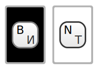

Какая карта будет следующей:
черная или белая?

Что это?
Игра на угадываение цвета карты.
Перед вами рубашка карты.
Никто, даже компьютер,
не знает какая там карта прячется, пока вы не приняли решение и не нажали
на соответствующую кнопку «Черная» или «Белая».
Сразу после нажатия на кнопку компьютер случайным образом создает оборотную сторону карты и показывает её вам.
Ведётся лог правильных предположений и общего количества раундов. Данные сохраняются в браузере.
Некоторые считают, что таким образом можно тренировать интуицию
Быстрые кнопки
Можно играть с клавиатуры 
All rights ok © 2011 jackyfox
Powered on jQuery, jQ.Hotkeys, jQ.Cookies, Blueprint and Inkscape